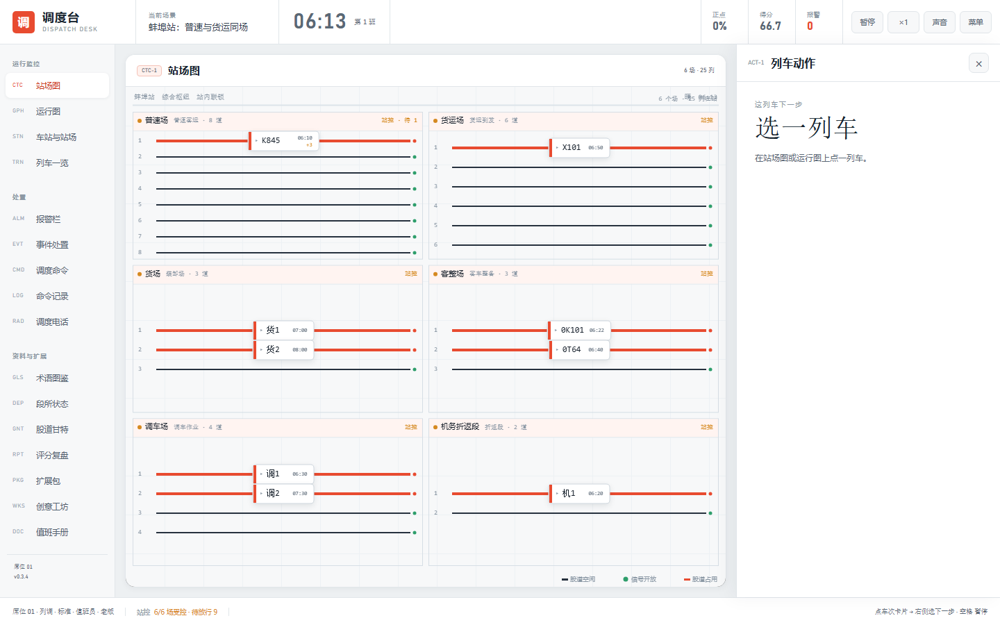
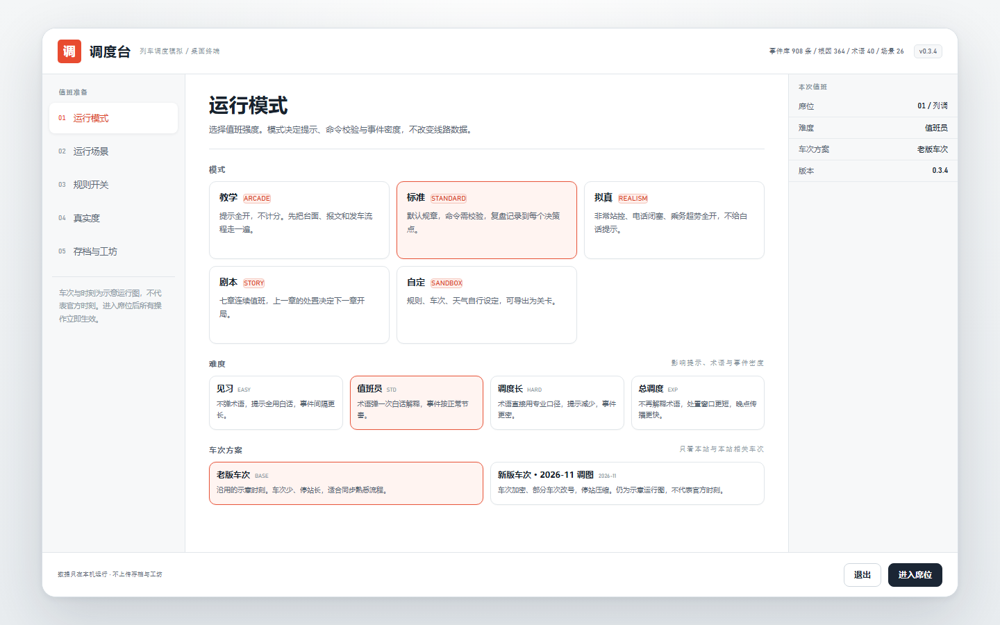
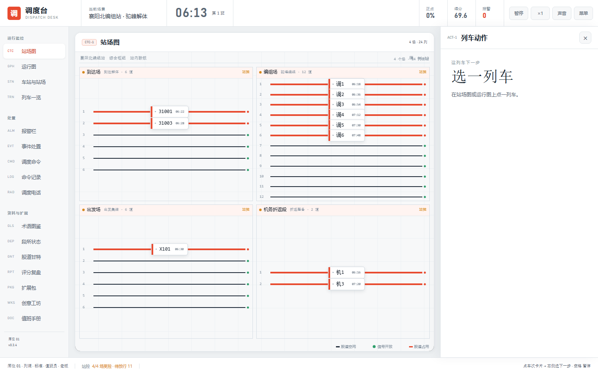
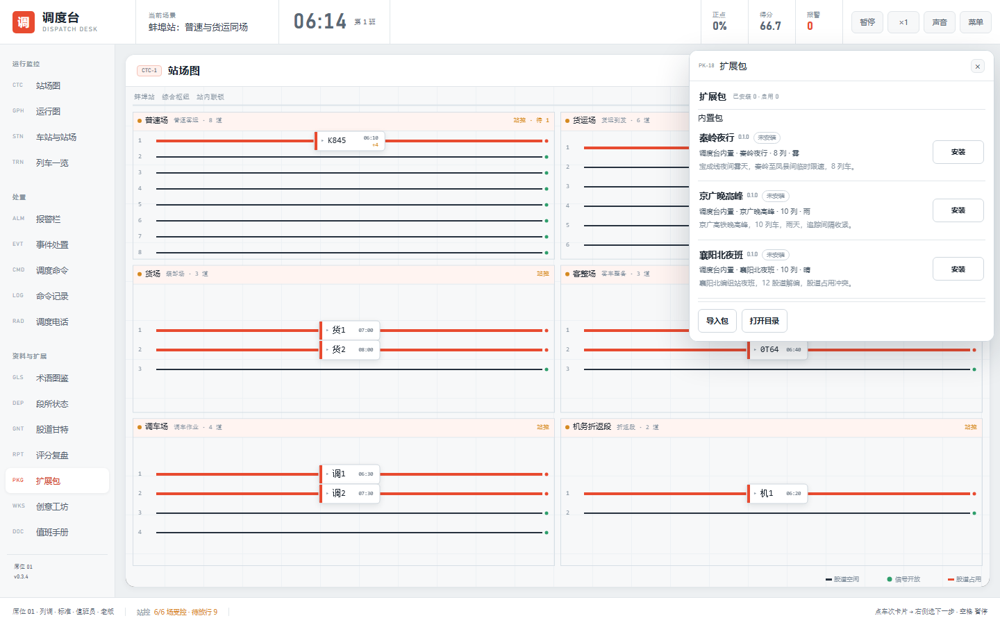

2026-11-23 · v0.5.7
四站 1,000 项设施清册与单项修理；e3 动车所一二级修与可用率；e4 口岸三条换装线、报关厅与跨班压车；8 条线路包各带独立场景；e1 编组站补驼峰禁溜线；m1 调车计划改成计划—牵出—推送三段，m5 绑定机车号，m6 客运站台优先，m8 事故联合处置。运价重平衡后百班沙盒平均净利约 2,300，周评级 A/A/A/B。
一个单机的铁路经营与调度模拟。你从值班员做起，值完一班就日结，用收入扩股道、招人、签合同、定政策；四站三区段的车流互相挤压，编组站、动车所、口岸站各自有作业。0.5.7 源码与网页版已更新。

三条线路，三种闭塞方式；五个枢纽关，覆盖综合站、货运站、动车段、车辆段与编组站，一个车站内部多个场同时控制。
以车站值班员与列车调度员的视角，处理一个班次内多条股道、多个站场的运行调整。线路关按区间排队，枢纽关按场分片：每个场有自己的股道、作业和待放行列车，共用站内走行线。
事件不是随机弹窗。每个根因有触发条件、传播路径和处置窗口，处置晚了会向下游车站与后续车次扩散。
| 项目 | 状态 | 说明 |
|---|---|---|
| 网页版 | 0.5.7 可运行 | 原生 ES modules，无构建；Chrome / Edge 直接打开。 |
| Windows 桌面端 | 包待重打 | 0.5.7 源码已提交；当前可下载的仍是 0.4.3 旧包。 |
| Pad 横屏端 | 旧包 | 当前 APK 仍是 0.4.3，0.5.7 未重打。 |
| 扩展包 | 20 包 | 4 个 Expansion、8 条线路包、8 个机制包；云端与本地镜像可装。 |
极简线路图：白底、浅灰分区、1px 细边，占用与警报只用橙红。PC 是键鼠台，站场图始终配一张右侧列车动作卡，默认空态提示“选一列车”；Pad 是单任务卡，点车后底部大卡片接管整块视线，一次只处理一列车。


一个站六个场排在同一张图上：普速场 8 道、货运场 6 道、货场 3 道、客整场 3 道、调车场 4 道、机务折返段 2 道。每个场单独接管、单独交回，pending 列车按场放行。
特殊事件按现实时间推进：首件约 90 秒，之后 5 分钟一件，同时只留一件待处置。弹窗给出代码、等级、剩余时间、车次位置、无线电原话和四条分支；处置后弹结果卡，写清选了什么、风险高低、各指标增减与传播链。货运场、客运场、编组站、段所各用自己的事件池。教程从“你不需要懂铁路”开始，第一关只有一座实训站、4 条股道、3 列车。
规则不是装饰。命令类型、受令者、区间、时限都会参与校验。
| 线路 | 车站 / 公里 | 闭塞 |
|---|---|---|
| 宝成线 | 宝鸡 0 · 秦岭 45 · 凤县 108 · 略阳 200 | 单线半自动 |
| 京广高铁 | 许昌东 0 · 漯河西 55 · 驻马店西 120 · 信阳东 210 | 双线自动 |
| 襄阳北 | 线路关 · 12 股道 | 站内调车 |
| 蚌埠站 | 6 个场 · 25 列作业 | 综合枢纽 |
| 蚌埠东 | 3 个场 · 18 列作业 | 货运站 |
| 动车段 | 检查库 6 · 存车线 8 · 洗车线 2 · 临修线 2 | 动车检修 |
| 车辆段 | 段修库 6 · 存车线 8 · 洗车线 2 · 临修线 2 | 客车整备 |
| 襄阳北编组站 | 到达 6 · 编组 12 · 出发 6 · 折返 2 | 驼峰解体 |
| 模式 | 差别 |
|---|---|
| 教学 | 提示全开，不计分，先走一遍流程。 |
| 标准 | 默认规章，命令需校验，复盘记录决策点。 |
| 拟真 | 非常站控、电话闭塞、乘务超劳全开，无白话提示。 |
| 剧本 | 七章连续值班，上一章处置影响下一章开局。 |
| 自定 | 规则、车次、天气自定，可导出为关卡。 |
启动屏可选「老版车次」或「新版车次 · 2026-11 调图」。新版增加 4 列/线、改号并压缩停站，仍然只是示意运行图；两套方案共用同一套事件库与站场数据，切换后立刻按新时刻铺图。
见习 / 值班员 / 调度长 / 总调度。难度同时改三样：事件间隔、处置时限、术语解释。见习不弹术语卡，总调度直接把处置窗口压短。
26 个内置场景，覆盖单线、双线、编组站、综合枢纽、动车段、车辆段与货运站。每个场景有独立的种子与事件序列。
| 编号 | 场景 | 线路 / 车站 | 要点 |
|---|---|---|---|
| T1–T11 | 教学与标准 | 宝成线 / 京广高铁 / 襄阳北 | 认识调度台、会车、红光带、调度命令、车辆段出所、沙盒开关。 |
| S1–S7 | 剧本 | 三线 | 七章连续值班，跨班次保留处置后果。 |
| D1–D3 | 每日 | 三线 | 雨夜宝成、枢纽爆仓、冻雨，每天换种子。 |
| H1–H5 | 枢纽 | 蚌埠站 / 蚌埠东 / 动车段 / 车辆段 / 襄阳北编组站 | 六场综合枢纽、三场货运站、四场动车段、四场车辆段、四场编组站，多个场同时接管与放行。 |
场景列表会读取本地存档与工坊；换机器不继承进度。
线路包和机制包从官网按需下载，安装包里不预装。0.5.7 的 8 条线路包各有独立场景，e1—e4 各自带编组站、区域调度、动车所、口岸站；装完可停用或卸载。

pack.json 描述一个场景：id、name、version、author，加 scene。场景里写线路（青岚 / 江湾 / 临河之一）、简要说明、用到的术语、时长、难度、天气与列车数。
包不携带线路表、车次表与事件库，这些仍来自主数据；包只挑选参数，保证不同包之间的站场图与运行图口径一致。
导入支持单个 .json，也支持 .zip（根目录或一层子目录里有 pack.json 即可）。校验 id、名称、版本、线路与列车数，不合格的包不会进列表。
安装记录与启用状态存在浏览器 / 应用本地存储，不写系统目录。导入的包只在本机生效，不联网上报。
0.5.7 源码和网页版已更新；桌面与 Pad 安装包还没重打，不要拿 0.4.3 旧包当新版。
0.5.7 的网页版已上线；latest.json 仍指向 0.4.3，等新安装包生成后再改自动更新清单。首次运行旧包如被 SmartScreen 拦截，选择「更多信息 → 仍要运行」。
四站 1,000 项设施清册与单项修理；e3 动车所一二级修与可用率；e4 口岸三条换装线、报关厅与跨班压车；8 条线路包各带独立场景；e1 编组站补驼峰禁溜线；m1 调车计划改成计划—牵出—推送三段，m5 绑定机车号，m6 客运站台优先，m8 事故联合处置。运价重平衡后百班沙盒平均净利约 2,300，周评级 A/A/A/B。
三区段车流分配与跨班积压、21 班周结评级与三选一政策、3 班整改、编组站四场、区域调度、人员疲劳与休班培训、合同履约、事件库运行期扩到 2,724 条。
55 站资源包改为云端按需下载，桌面与 Pad 安装包不再携带；站场图补上接车、换线、发车、出清的连续移动，跨站通过车自动选线通过；车种增加轨道检测车、检修车、工程车，客运站分出独立货场股道，货运车带装卸作业，程序化背景音乐随天气与场景切换。
整套界面改成手绘纸面游戏风：站场图、运行图、启动屏、教学卡、事件弹窗全部换色重画。PC 改成键鼠台，只留站场图与运行图；Pad 改成单任务卡，一次只处理一列车，底部大按钮。核心操作改为直接点车次牌，右侧弹出“这列车下一步”。特殊事件改现实时间 5 分钟一件，处置后弹结果卡，明确显示选择、风险、指标变化和传播链。教学第一关缩成单站 4 股道 3 列车，并同步改写教程；货运站、客运站、编组站、段所各用自己的事件池。
站场图改为缓弯道岔、圆点信号、占用股道整段红线；反向车次区间修复并重跑时刻表；新增只读命令记录窗；桌面端与官网首版。
工作台改为 Win11 桌面外壳，中性灰黑配色；数据换成宝成线、京广高铁、襄阳北，车次换真实车次；命令库扩到 4536 条。